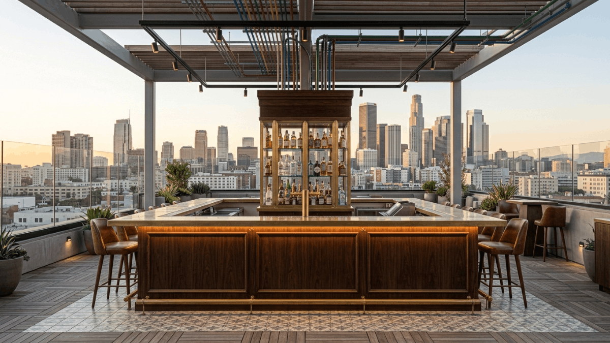
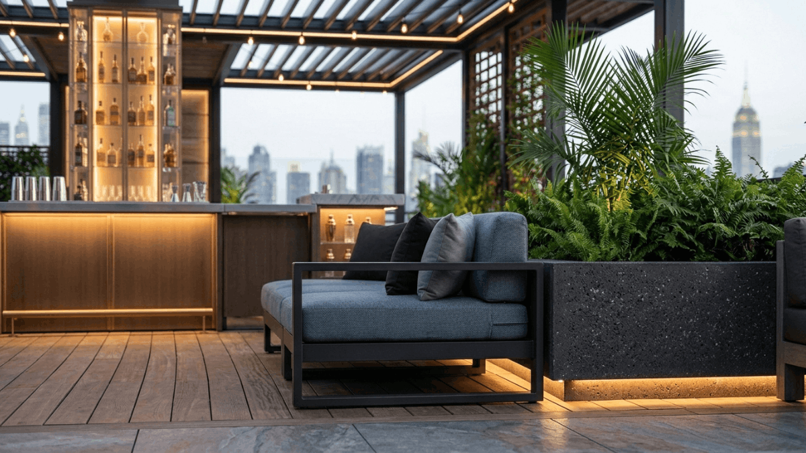
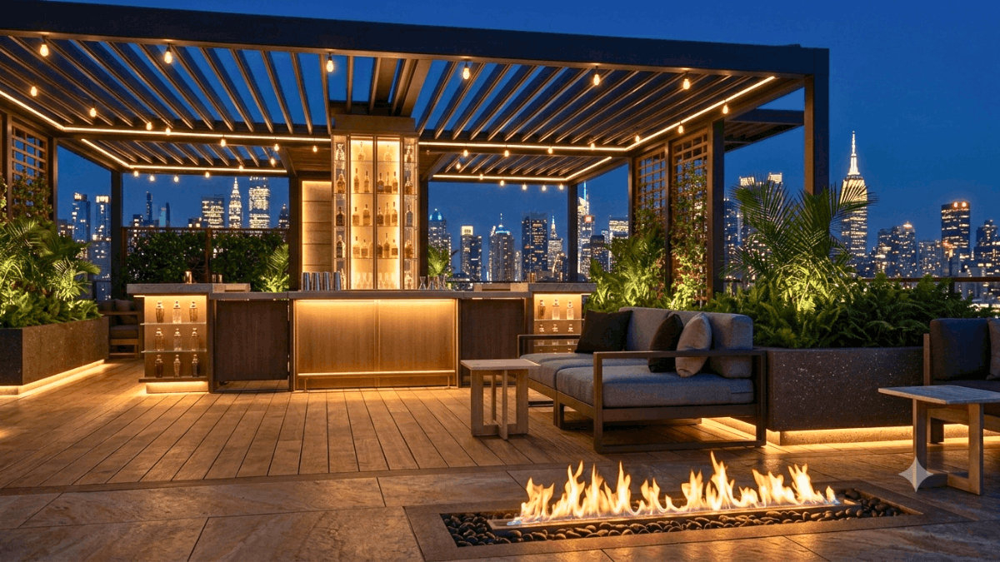
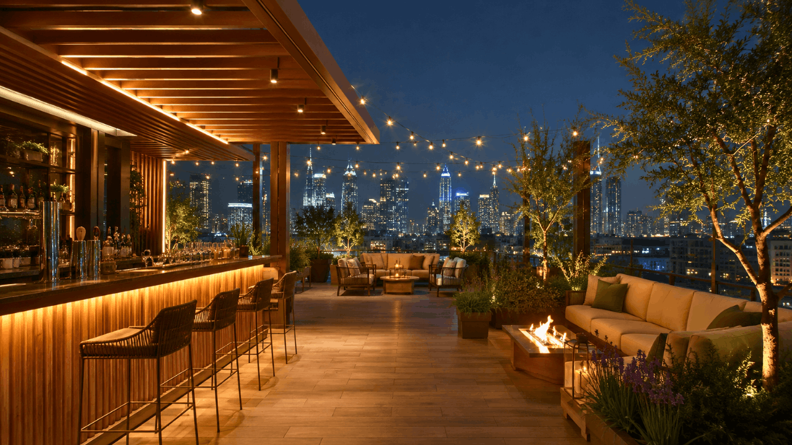

A rooftop bar has one immediate advantage over almost every other hospitality format: the view. Whether it’s a city skyline, a stretch of coastline, or simply the open sky at dusk, the elevation alone creates a sense of occasion that guests pay a premium for. But a view is not a venue. The operators who understand this and treat the rooftop as a design challenge rather than a guaranteed drawcard are the ones building the most compelling and commercially durable rooftop experiences in the market.
At SprintCo, rooftop bars present some of the most interesting and technically demanding design work we do. The constraints are real: structural load limits, wind exposure, weather variability, access logistics, and compliance complexity. Within those constraints, the opportunity to create something genuinely spectacular is equally real.
Here is what separates a great rooftop bar from one that simply has a good view.

The View Is the Starting Point, Not the Design
Every design decision in a rooftop bar should be made in relation to how to frame it, how to preserve it, and how to make guests feel connected to it from every seat in the venue.
This sounds obvious. It is frequently ignored. Operators and designers make seating, bar, and structure decisions based on floor plan logic that would apply to any indoor venue, and the view becomes incidental rather than central. Guests at the back of the room can’t see it. The bar blocks sightlines from half the seats. A pergola structure that was necessary for shade ends up obscuring the very skyline that made the location worth developing.
The first step in designing a rooftop bar is a sightline analysis, mapping what can be seen from where, at seated height, at standing height, and from the bar. Every subsequent decision about where the bar sits, how seating is arranged, how structures are positioned, and how tall any element is allowed to be flows from that analysis.
The view deserves to be designed around, not designed past.

Zoning: Create a Journey, Not Just a Destination
The most memorable rooftop bars are not single environments. They are sequences of spaces, each with its own character, its own seating typology, its own relationship to the view and the sky that guests move through and discover across the course of an evening.
A well-zoned rooftop might offer a standing arrival zone near the access point where guests get their first drink and their first look at the view. A main bar and social area with high tops and casual seating for the energy-seeking crowd. A more sheltered lounge section with low sofas and coffee tables for guests who want to settle in. A semi-private area, a cabana, a curtained section, a defined enclosure for groups who want a sense of exclusivity within the wider venue.
This zoning serves guests at different stages of their visit and with different social intentions. It also makes the rooftop feel larger, more layered, and more worth exploring than a single open deck with uniform seating ever could.
The transitions between zones matter as much as the zones themselves. A change in floor level, even a single step, signals a shift in environment. A change in overhead treatment, from open sky to pergola to sail shade, creates a different atmosphere within the same rooftop. These transitions are the design moves that make a rooftop feel considered rather than simply furnished.

Shelter Without Sacrifice
Weather is the defining operational challenge of every rooftop bar. Too much exposure and the venue is unusable in wind, rain, or extreme heat. Too much shelter and the essential quality of being outdoors, the openness, the connection to the sky, and the sense of elevation are lost.
The design challenge is providing enough protection to extend the operational window across different weather conditions without creating a structure that feels like an indoor room that happens to have fresh air.
Operable louvre roof systems are the gold standard for rooftop shelter. They open fully to allow unobstructed sky views in good conditions and close to provide weather protection when needed. The investment is significant, but the operational flexibility they deliver, keeping a rooftop trading through a rain shower, providing shade in summer without losing the sky in autumn, pays back across every season.
Wind management is often underestimated. Glass balustrades protect guests from wind while preserving sightlines in a way that solid walls cannot. Strategically positioned planters, screens, and soft landscaping buffer prevailing winds without creating enclosed, indoor-feeling sections. Understanding your specific site’s wind behaviour direction, speed, and seasonal variation before specifying any shelter or screening solution is essential.
Heating extends the trading season dramatically in cooler climates. Infrared ceiling heaters mounted within pergola structures are far more effective and far less visually obtrusive than freestanding gas heaters on wheels, which are always the default in venues that didn’t plan heating into the design from the start.

Materials: Built for the Outdoors, Designed for the Experience
Rooftop environments are genuinely harsh on materials. UV exposure, temperature cycling, wind, rain, and the inevitable spills of a busy bar service degrade materials faster than any interior environment. Specifying materials that look beautiful on day one but require replacement within three years is a design failure, not just a cost problem.
Teak, powder-coated aluminum, concrete, natural stone, and high-quality outdoor-rated upholstery fabrics are the materials that earn their place on a rooftop. The best rooftop material palettes are warm, considered, and visually rich; they simply happen to be specified in materials that can withstand what a rooftop will put them through.
Flooring deserves particular attention. Structural load limits frequently restrict the use of heavy materials like stone or thick porcelain tile. Composite decking, lightweight porcelain on pedestals, and resin-bonded surfaces offer durability and visual quality within tighter weight constraints. Anti-slip ratings are a non-negotiable safety specification for rooftop floors that get wet, and the consequences of a slip at height are serious.
Lighting After Dark
A rooftop bar at sunset looks after itself. The same rooftop at 9 pm depends entirely on how well it has been lit.
The instinct is to light generously to compensate for the darkness of being outside. The better instinct is to light warmly and selectively, letting the ambient darkness of the night sky become part of the atmosphere rather than something to be overcome.
String lighting remains one of the most effective rooftop tools when used thoughtfully. Warm globe strings draped between pergola beams or sail posts create an atmosphere that feels genuinely celebratory. The risk is that overusing a rooftop smothered in string lights in every direction loses the intentionality that makes the technique work.
Combine string lighting with lower-level sources: illuminated planters, in-ground path lighting, uplighting through landscaping, candlelight on tables, and warm underlighting beneath the bar counter. The goal is a rooftop that glows from multiple levels simultaneously with visual depth when seen from outside and genuine warmth when experienced from within.
The city view at night, if your location has one, is itself a light source. Design your lighting to complement it, not compete with it.
The Bar as a Rooftop Feature
The bar structure on a rooftop has a different brief than an indoor bar. It needs to be a visual landmark, something that anchors the space and gives guests a destination while managing the operational realities of outdoor service and the logistical constraints of a rooftop setting.
Open, island-format bars work particularly well on rooftops. They allow guests to gather on all sides, maintain sightlines beyond the bar rather than blocking them, and create social energy around a central point. Enclosed back-bar cabinetry with glass frontage protects the bottle display from wind and dust while maintaining the visual impact that open shelving provides indoors.
Service logistics are often the last thing considered in rooftop bar design and the first thing to cause operational problems. How do deliveries reach the rooftop? Where is glassware stored and washed? Where does waste go? Is there a service lift, or are staff carrying everything up a staircase during service? These are structural decisions that need to be resolved at the design stage, not problems to be solved on opening night.
How SprintCo Approaches Rooftop Bar Design
Rooftop bars require design thinking that is simultaneously creative and technically rigorous. The structural constraints, weather exposure, service logistics, and compliance requirements are all real, and they need to be understood before the aesthetic direction is established, not after.
SprintCo brings both dimensions to every rooftop project. We begin with the site’s view, its structural capacity, its wind behaviour, its access, and design from those realities outward. The result is rooftop bars that are as durable and operationally sound as they are visually distinctive.
Planning a rooftop bar? Talk to SprintCo before the structure is decided; that’s where the best design opportunities live.
SprintCo Restaurant & Hospitality Design | Designing spaces that guests return to.
Pan-India presence | 3500+ F&B spaces delivered — Visit SprintCo’s Website